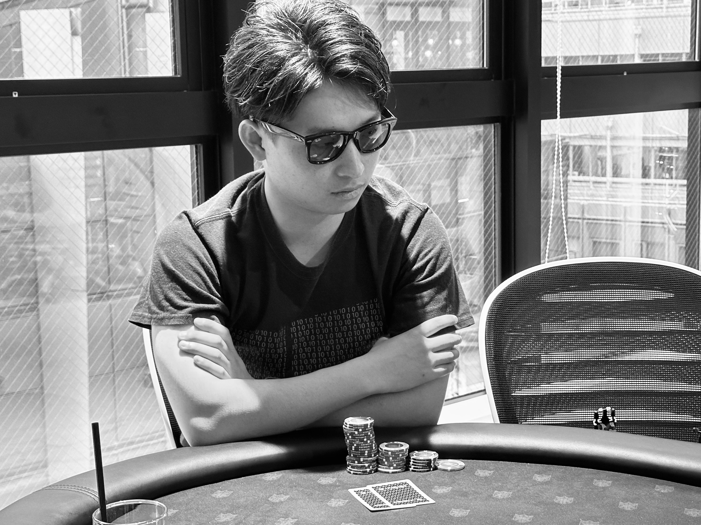
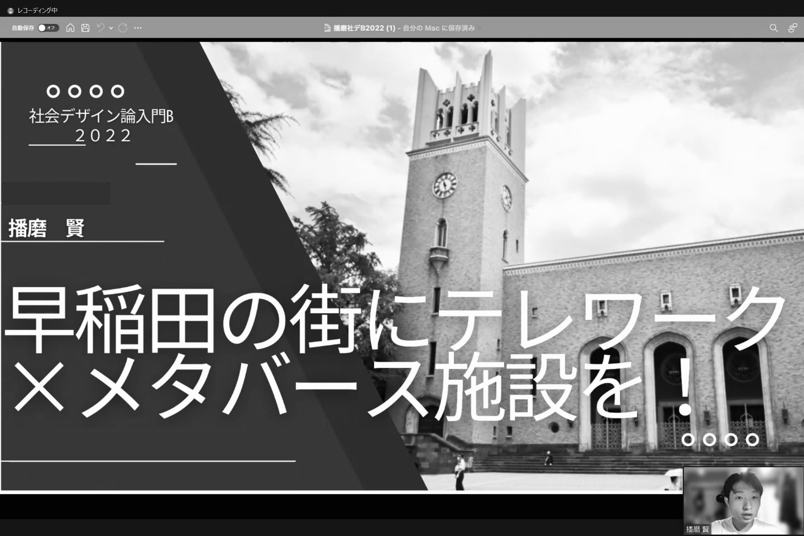
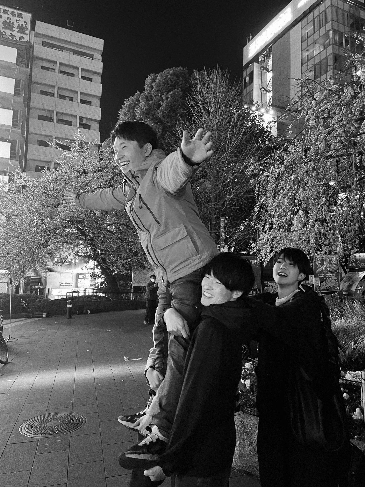
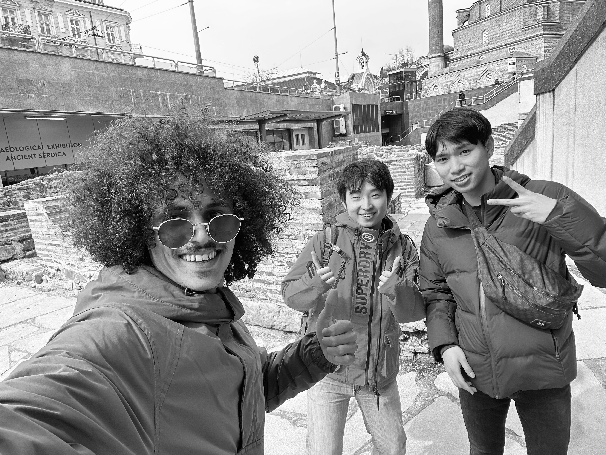
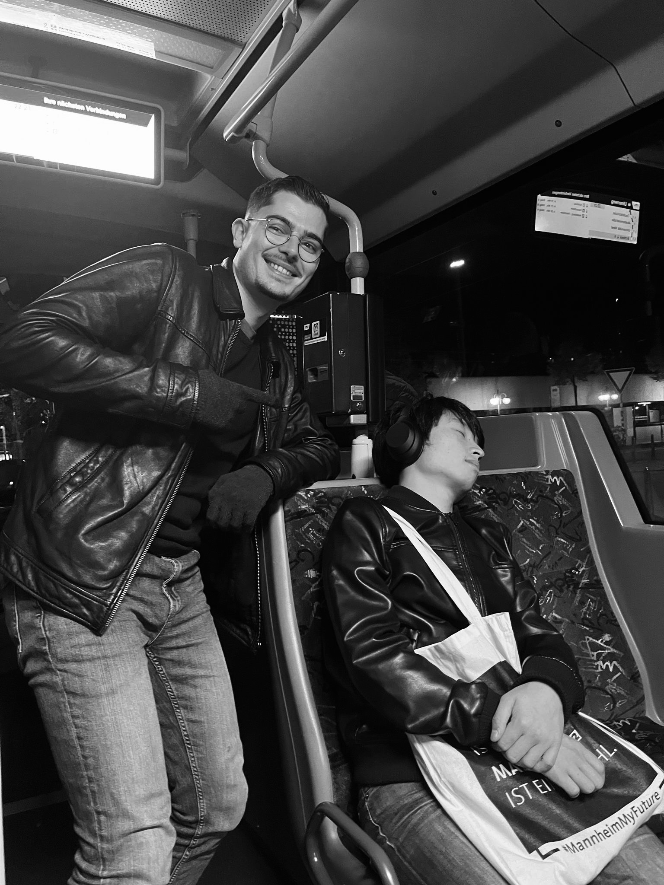
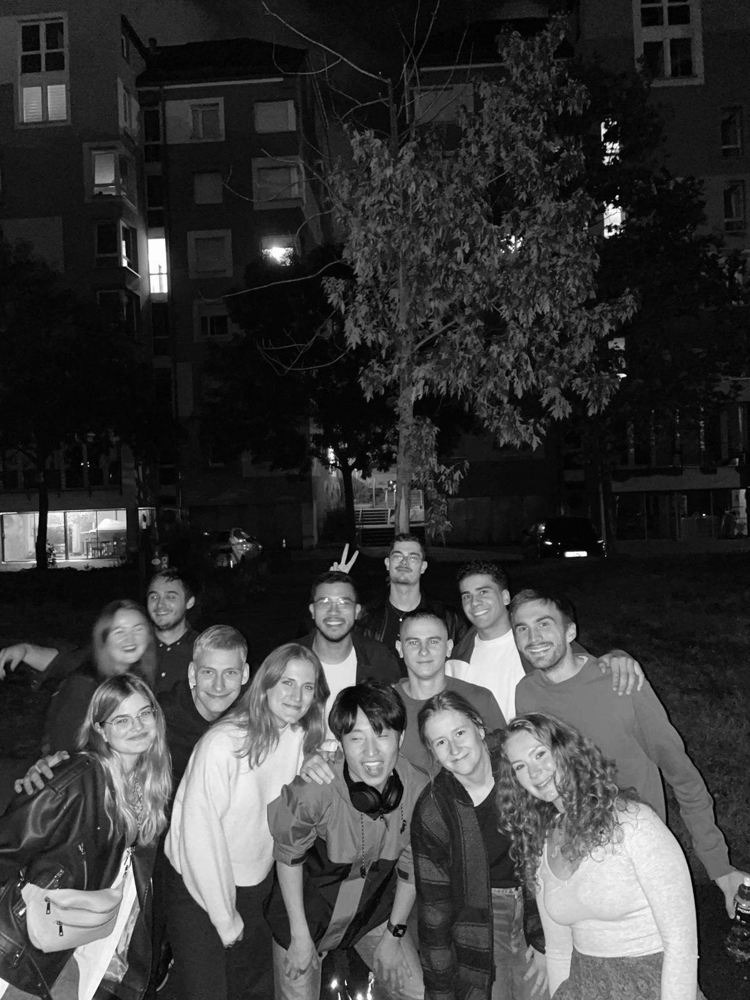
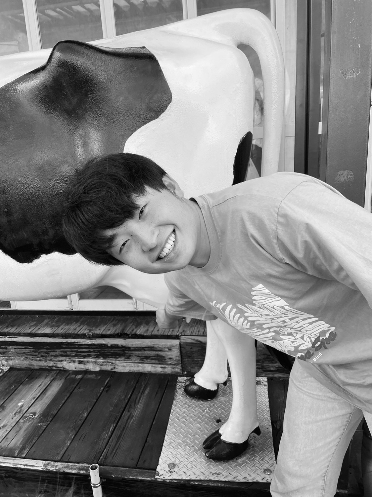
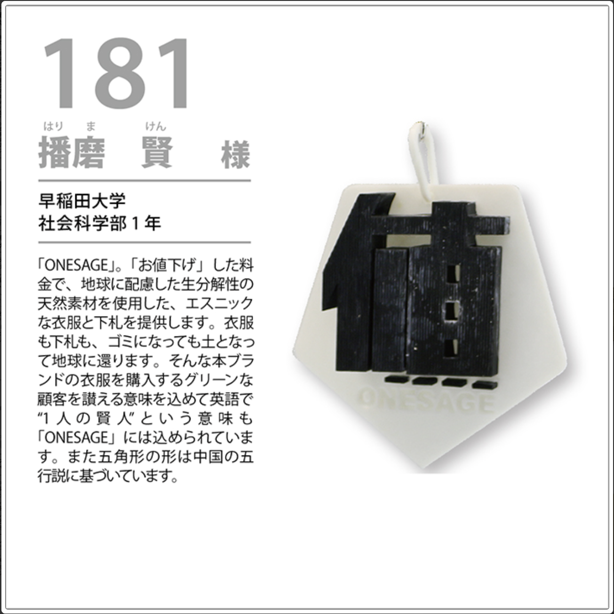

MARKETING
野口ゼミ×理想科学工業株式会社マーケティング戦略コンペ
最優秀賞受賞
...
デバイスを横向きにしてください
>> PLEASE ROTATE DEVICE TO LANDSCAPE
画面を縦にしてください
>> PLEASE ROTATE DEVICE TO PORTRAIT
PCでの閲覧で、
本来の体験が可能になります
MESSAGE SENT!
お問い合わせありがとうございます。
確認次第ご連絡いたします。
School of Social Sciences
/// PROCESSING...
UNLOCK DATE: 2026.05
学歴：早稲田大学社会科学部社会科学科卒業、独・マンハイム大学社会科学科社会学科（１年間交換留学）、広尾学園中学・高等学校卒業
...
...
...
最優秀賞受賞
...
勤労青少年躍進会理事長賞受賞
...
TOP40 東京ビックサイト展示
...
投資利益率532%
...
コラボ企画動画実行委員
...
優秀賞受賞
...
東京都産業労働局長賞受賞
...
最優秀賞受賞
...
107位入賞
...
Dir: /root/user/ken.h/memory_dump/ // MODE: READ_ONLY

2024@Tokyo, Japan

2022@Tokyo, Japan

2025@Tokyo, Japan

2024@Sofia, Bulgaria

2023@Mannheim, Germany

2024@Mannheim, Germany

2023@Yamanashi, Japan
>> ACCESS_LEVEL: GRANTED // ID: 10TH_LABEL_CONTEST

[CONCEPT]: "ONESAGE" (Price Down + Sage). 3D printed using 100% biodegradable material.
[STATUS]: SELECTED TOP 40. Exhibited at Tokyo Big Sight.